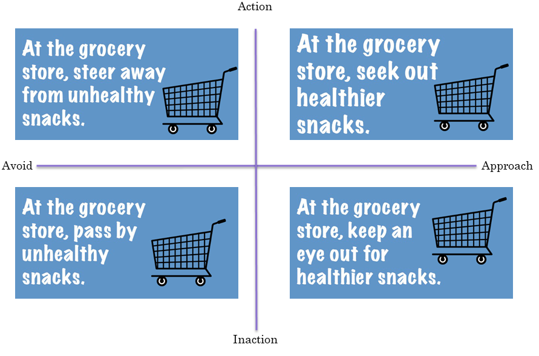
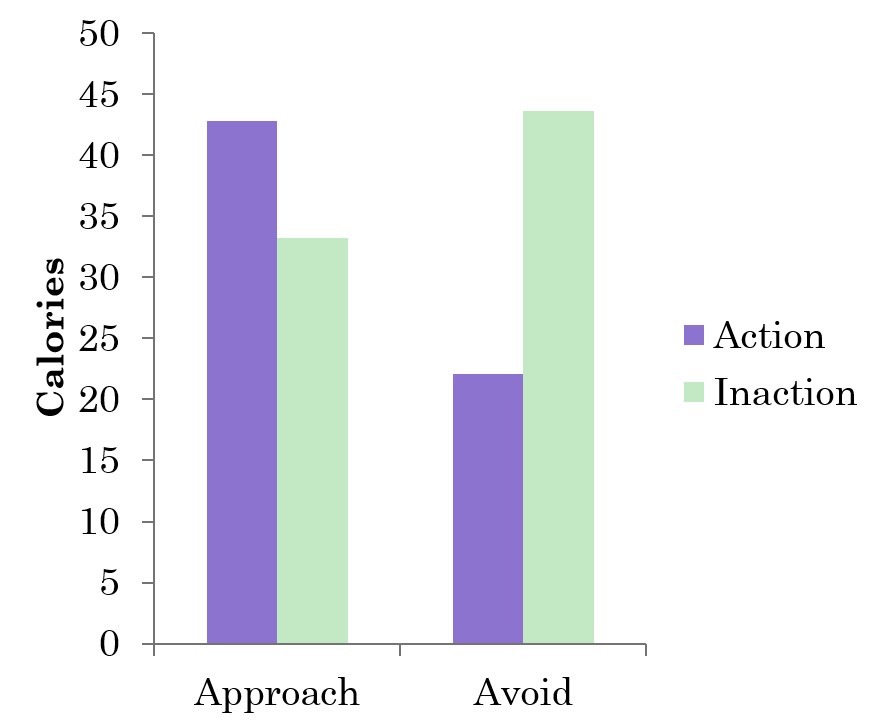

Action and Approach Motivation in Cognitive Reflection
Clint McKenna
February 5th, 2020
What is Approach-Avoidance motivation?
What is Action-Inaction motivation?
Interactive Effects

Nisson and Earl (2016)

Nisson and Earl (2016)
Study 1
Concept Activation
Action categories: t(45) = 8.85, p < .001
Inaction categories: t(45) = 8.02, p < .001

Approach categories: t(45) = 7.12, p < .001
Avoid categories: t(45) = 6.09, p < .001